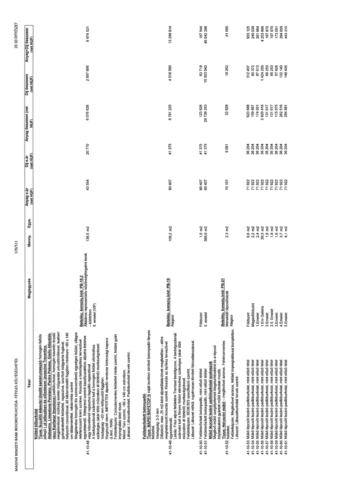

| Tétel | Megjegyzés | Menny. | Egys. | Anyag e.ár (net HUF) | Díj e.ár (net HUF) | Anyag összesen (net HUF) | Díj összesen (net HUF) | Anyag+Díj összesen (net HUF) |
|---|---|---|---|---|---|---|---|---|
| 41-10-48 Kültéri kőburkolat Típus: fagyálló édesvízi tömött keménymészkő homogén felhős jellegű ( pl jellelegében és előzetesen javasolva Travertino Alabastro, Limestone Persiano, Piedra Paloma, Giallo Atlantide vagy Kanfanar limestone) padlóburkolat, homogén travertin érzetű megjelenéssel szükség esetén műgyantás pórustömítéssel, leather/ gyémántkefélt felülettel, ragasztva, szorított műgyanta fugával, helyszíni csiszolással, kő táblamérettől függően minimum ~80 x 140 cm táblamérettel, rakásminta szerint Megjelenése homogén kis szemcseméretű egységes felület, világos /elefántcsont/ krém színben. Kiosztás a belsőépítész terveivel egyeztetendő. Rétegrend szerinti bazaltvázalékkos aljzatra fektetve vagy közvetlenül fagyálló ragasztóval A bedolgozásnál számolni kell a homogén felület eléréséhez szükséges (akár több műszakon át történő) munkavégzéssel Vastagság: ~20 mm kőtípustól függően Kiegészítő elem: IMPERTEK álpadló rendszer biztonsági kapocs (Lásd.: fotók) Felületképzés: Csúszásmentes felülettel minta szerint, felületi gyári impregnálás tétel része. Méret: Terv szerint, ~80 x 140 cm méretben. Lábazat: Lábazatburkolati, Padlóburkolati tervek szerint. | Belsőép. konszig. kód: PB-15.2 Általános reprezentatív közönségforgalmi terek - kültérben 5. emelet (VIP) | 139,5 | m2 | 43 554 | 20 770 | 6 076 626 | 2 897 895 | 8 974 521 |
| 41-10-49 Felületerősített betonpadló Típus: MAPEI MAPETOP N saját levében simított betonpadló fényes felülettel. Vastagság: 2-3 mm Dilatáció: max. 25 m2-ként aljzatdilatációknak megfelelően – előre meghatározott kiosztás szerint. Kiosztás az építész tervezővel egyeztetendő. Leírás: Friss aljzat felületére Tremixel bedolgozva. A bedolgozásnál számolni kell a fényes felület eléréséhez szükséges (akár több műszakon át történő) munkavégzéssel. Felületképzés: BE08-503 specifikáció szerint. Lábazat: Lábazat nélkül, rugalmasan tömített falcsatlakozással. | Belsőép. konszig. kód: PB-19 Alagsor | 109,2 | m2 | 80 407 | 41 375 | 8 781 225 | 4 518 589 | 13 299 814 |
| 41-10-50 Felületerősített betonpadló, mint előző tétet | Földszint | 1,5 | m2 | 80 407 | 41 375 | 123 826 | 63 718 | 187 544 |
| 41-10-51 Felületerősített betonpadló, mint előző tétet | 5. emelet | 369,9 | m2 | 80 407 | 41 375 | 29 739 253 | 15 303 043 | 45 042 296 |
| 41-10-52 Műkő lépcsőt lezáró padlóburkolati szakaszok Meglévő műkő szegélyelemek kiegészítéseként és a lépcső folytatásaként gyártott műkő burkolati mezők. Típus: Helyszíni műkő – meglévővel azonos. Fehércementes felülettel. Felületképzés: Meglévővel azonos, felületi impregnálással kompletten. Lábazat: Lábazatburkolati tervek szerint. | Belsőép. konszig. kód: PB-21 Menekülő lépcsőházak Alagsor | 2,3 | m2 | 10 101 | 8 081 | 22 828 | 18 262 | 41 090 |
| 41-10-53 Műkő lépcsőt lezáró padlóburkolat, mint előző tétel | Földszint | 8,6 | m2 | 71 922 | 36 204 | 620 688 | 312 437 | 933 125 |
| 41-10-54 Műkő lépcsőt lezáró padlóburkolat, mint előző tétel | Magasföldszint | 2,2 | m2 | 71 922 | 36 204 | 159 667 | 80 372 | 240 039 |
| 41-10-55 Műkő lépcsőt lezáró padlóburkolat, mint előző tétel | 1.emelet | 2,4 | m2 | 71 922 | 36 204 | 174 051 | 87 613 | 261 664 |
| 41-10-56 Műkő lépcsőt lezáró padlóburkolat, mint előző tétel | 1.Em Galéria | 39,3 | m2 | 71 922 | 36 204 | 2 829 416 | 1 424 250 | 4 253 666 |
| 41-10-57 Műkő lépcsőt lezáró padlóburkolat, mint előző tétel | 2.emelet | 1,8 | m2 | 71 922 | 36 204 | 131 617 | 66 253 | 197 870 |
| 41-10-58 Műkő lépcsőt lezáró padlóburkolat, mint előző tétel | 2.5. Emelet | 1,8 | m2 | 71 922 | 36 204 | 131 617 | 66 253 | 197 870 |
| 41-10-59 Műkő lépcsőt lezáró padlóburkolat, mint előző tétel | 3.emelet | 1,6 | m2 | 71 922 | 36 204 | 115 075 | 57 926 | 173 001 |
| 41-10-60 Műkő lépcsőt lezáró padlóburkolat, mint előző tétel | 4.emelet | 3,7 | m2 | 71 922 | 36 204 | 262 516 | 132 143 | 394 659 |
| 41-10-61 Műkő lépcsőt lezáró padlóburkolat, mint előző tétel | 5.emelet | 4,1 | m2 | 71 922 | 36 204 | 294 881 | 148 435 | 443 315 |
